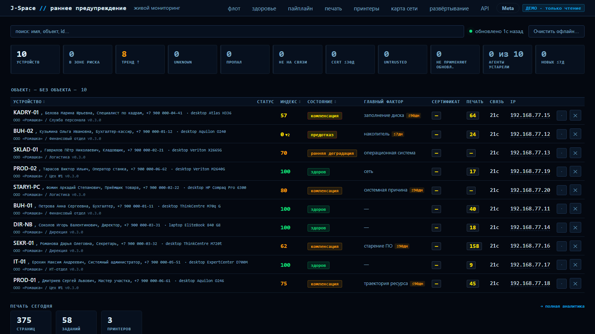
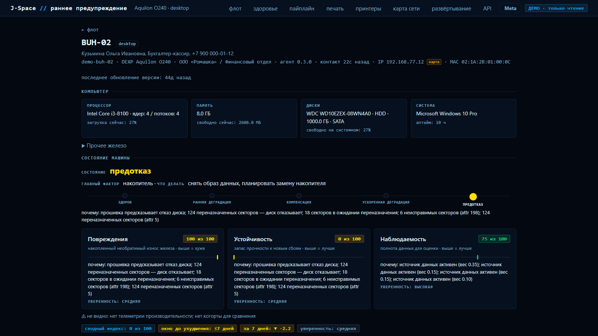
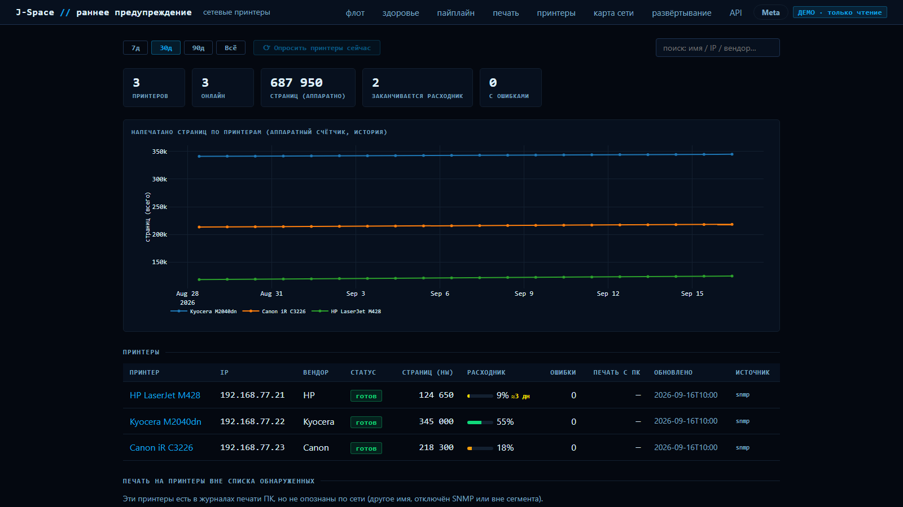
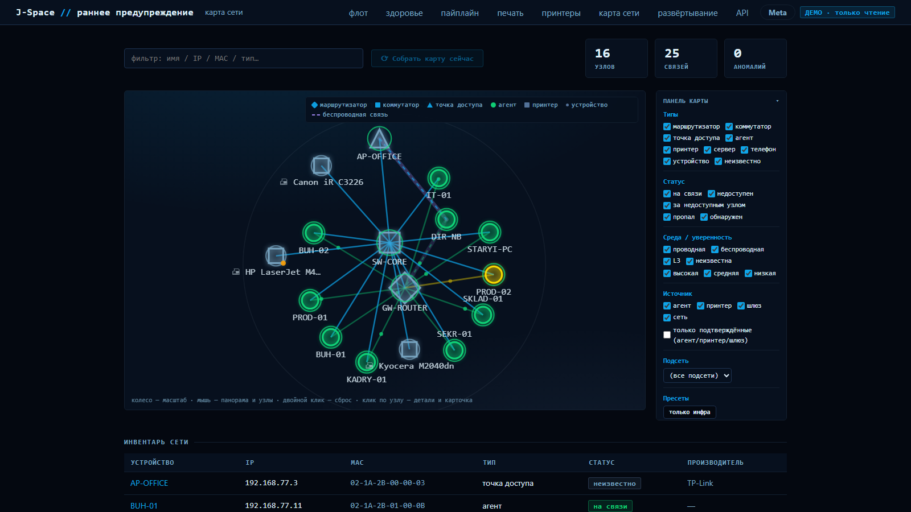
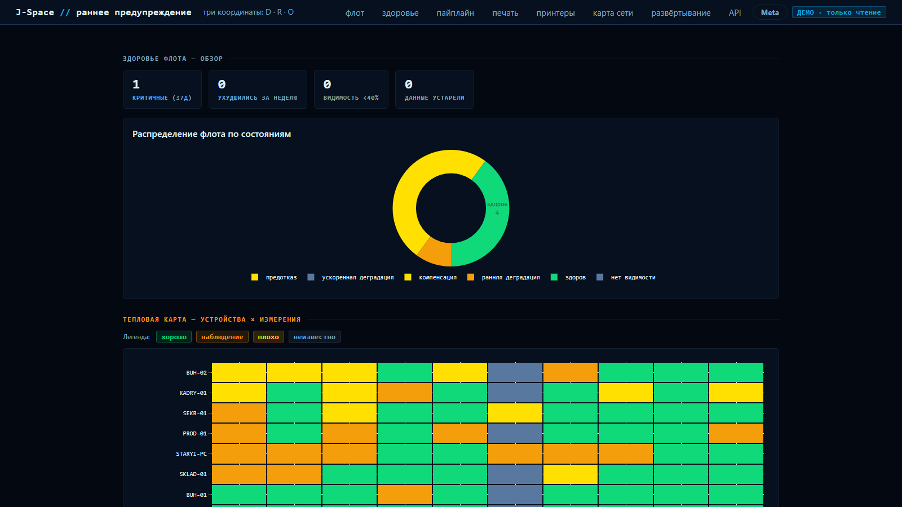

self-hosted · открытый код · Windows-парк
Раннее предупреждение отказов парка Windows-ПК
Тонкий агент без единой зависимости собирает телеметрию — SMART, журналы, BSOD, сеть, печать. Сервер оценивает риск отказа каждой машины и показывает, какая сломается следующей.
- 0 зависимостей у агента
- FastAPI + SQLite на сервере
- 3 координаты здоровья вместо одного числа
{kind=link}

машина не ломается вдруг — она проходит эти состояния, и SRP видит переход
Что это
Что такое SRP
SRP — это self-hosted система раннего предупреждения отказов парка Windows-компьютеров. На каждую машину ставится тонкий агент на стандартной библиотеке Python: он собирает SMART-атрибуты дисков, журналы событий, факты BSOD, показатели производительности, сетевую и печатную телеметрию — и раз в 5–15 минут отправляет их серверу. Сервер копит историю, считает риск отказа по классам и показывает, какая машина сломается следующей, с объяснением каждого фактора.
| Вопрос | Классический мониторинг | SRP |
|---|---|---|
| На что отвечает | Что сломано прямо сейчас | Что сломается следующим и когда |
| Как срабатывает | Порог: диск на 90 % — авария | Тренд и срок до выхода за границу |
| Оценка машины | Одно число или набор графиков | Три независимые координаты: повреждения, устойчивость, наблюдаемость |
| Если данные врут | Считает их как есть | Источник теряет доверие и не участвует в выводах |
| Что ставится на ПК | Агент с зависимостями или опрос извне | Агент на чистой стандартной библиотеке, ноль pip-пакетов |
Витрина
Что видно на экране
Кадры сняты с демо-парка: десять вымышленных машин с настоящей историей телеметрии. Наведите на кадр — он подписан.
Диск, который скоро откажет
124 переназначенных сектора, 18 в ожидании, прошивка сама предсказывает отказ. SRP не ждёт, пока диск встанет: он показывает срок и объясняет каждый фактор словами, а не кодом атрибута.
{kind=link}

Тонер закончится раньше, чем вы вспомните о нём
Сетевые принтеры опрашиваются по SNMP: уровень расходников, счётчики страниц, оценка даты, когда картридж кончится. Плюс — кто именно печатает и сколько.
{kind=link}

Кто к чему подключён
Роутер, коммутатор, точка доступа, компьютеры и принтеры — граф собирается из SNMP, LLDP и наблюдений самих агентов. Беспроводные связи отличаются от проводных, у каждой связи своя уверенность.
{kind=link}

Здоровье парка целиком
Распределение по состояниям и тепловая карта «машины × измерения»: где именно проседает парк — в железе, в стабильности ОС или в наблюдаемости.
{kind=link}

Как устроено
Три части, ни одной лишней
Ничего не ставит сверх себя
Чистая стандартная библиотека Python, ноль pip-пакетов на рабочих машинах. PowerShell 5.1 — тот, что уже есть в Windows. Данные собираются языконезависимо: русская Windows отдаёт те же числа, что английская.
Одна команда, один файл базы
FastAPI и SQLite, разворачивается у вас — телеметрия парка наружу не уходит. Сервер проверяет каждый конверт на границе, копит историю, считает риск и держит прогнозы.
Не число, а объяснение
Три координаты здоровья, риск по классам отказа с разбором вклада каждого фактора, прогнозы SMART и тонера, карта сети. Серверный рендер, без сборки JS.
Доверие к данным — часть модели. У каждого источника телеметрии своя оценка: источник может устареть, начать врать или замолчать. Такой источник не участвует в выводах, и это видно на экране. UNKNOWN честнее ложной уверенности — SRP скорее скажет «не знаю», чем нарисует уверенный ноль.
Скачать бесплатно
Три шага до первого экрана
Поднять сервер
Скачайте srp-server-free.zip, распакуйте и запустите
install-server.bat. Нужен Python 3.9+.
Поставить агент
На каждой машине запустите srp-setup-free.exe от администратора.
Мастер спросит адрес сервера — и всё.
Открыть дашборд
Через несколько минут на http://адрес-сервера:8000 появятся первые
машины и их оценки.
Бесплатная версия: до 3 компьютеров · некоммерческое использование (PolyForm Noncommercial)
Полная версия
Когда парк больше трёх машин
- Без лимита машин — весь парк на одном сервере.
- Автообновление агентов — новая версия расходится по парку сама, с откатом при неудаче.
- Несколько организаций и подразделений — свои площадки, свои списки, свои владельцы машин.
- Поддержка внедрения — установка, настройка сбора, разбор первых находок.
Вопросы и ответы
Что обычно спрашивают
Чем SRP отличается от обычного мониторинга вроде Zabbix?
Классический мониторинг отвечает на вопрос «что сломано сейчас» и срабатывает по порогам: диск заполнен на 90 % — авария. SRP отвечает на другой вопрос: «что сломается следующим и когда». Он копит историю по каждой машине, считает тренд и срок до выхода за границу, а вместо одного числа здоровья показывает три независимые координаты: накопленные повреждения, запас устойчивости и полноту данных. Отдельно оценивается доверие к каждому источнику: источник, который устарел или начал врать, не участвует в выводах, и на экране это видно.
Что нужно, чтобы попробовать?
Python 3.9 или новее на машине, где будет сервер, и права администратора на компьютерах, куда ставится агент. Сервер разворачивается из архива одной командой, агент — установщиком, который спрашивает только адрес сервера. Ничего облачного не требуется. Бесплатная версия принимает до трёх компьютеров.
Уходит ли собранная телеметрия наружу?
Нет. Сервер разворачивается у вас, и данные никуда не отправляются. Серийные номера дисков агент хеширует ещё до отправки — наружу уходит только хеш. Из сетевых адресов передаются исключительно частные диапазоны локальной сети. Приватные ключи сертификатов не собираются в принципе, только метаданные срока действия.
Работает ли это на русской Windows?
Да, и это проверено на живых машинах. Агент читает счётчики через CIM и разбирает только числа и английские имена перечислений — локализованный текст в расчёты не попадает. Установщик тоже не зависит от языка системы: права назначаются по идентификаторам, а не по именам групп.
Сколько это стоит?
Бесплатная версия — до трёх компьютеров, некоммерческое использование по лицензии PolyForm Noncommercial. Полная версия снимает лимит и добавляет автообновление парка и разделение по организациям; о ней договариваемся отдельно.